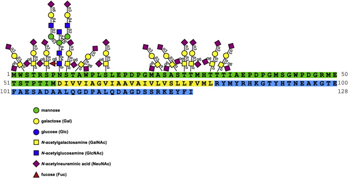

Thinking Slow
About
Transfusion Links
Categories
All
(8)
FOTD
(4)
R
(1)
causal inference
(1)
coding
(2)
culture
(1)
list
(1)
simulation
(1)
transfusion
(5)
Resources
ISBT Blood Group Tables
CBS Clinical Guide to Transfusion
Australia Learn Transfusion
Transfusion Library
Canadian Standards
National Advisory Committee on Blood
ORBCon
Calculators and Tools
Portfolio Progress
Transfusion Library (searchable)
Antigen Excluder
Transfusion Reaction Classifier
RBC Alloimmunization Prediction Tool (RAPID)
Antigen Ethnicity Predictor
Heme Calculators for IVIG/BMI
Anti-Xa Heparin Nomogram UHN
Argatroban Nomogram UHN
Remote Access Links
Sinai Remote Access
UHN Remote Access
UHN Intranet
UHN Email Login
Sunnybrook Remote Access
St Michael’s Remote Access
St Michael’s Email Login
Apheresis
ASFA Apheresis Guidelines
Guidelines
PLEX Guidelines 2019
Thrombosis Canada
NCCN Guidelines
BSH Guidelines
How I Treat Series
McMaster CLOT Summaries
Digital Tools
Raspberry Pi: PiTunnel for GUI and RPi Tunnel
ChatGPT Login
Professional Associations
AABB
ASFA
CSTM
CBS
ICTMG
Podcasts/Blogs
Bloodbank Guy
CSTM Blog
Bloodnotes CBS
Forms
IVIG Request Form (Ontario)
Outpatient Lab Requisition Form (Ontario)
Generic UHN Prescription
UHN Prog
Note Templates
General Consult Note
Thrombosis Note
Progress Note
Note Writer (Beta)
Schedules and Files
Rotation Schedule
Billing
Billing Hotlinks
On-Call Billing Sheet
Cheatsheet GIM
GIM Billing Card
Cheatsheet Heme
OHIP Billing (Heme/GIM/Premium)
OHIP Premiums
OHIP Telemedicine
Blood Product Trivia 1
transfusion
FOTD
Understanding the technical specifications of blood products is essential for operating blood banks effectively. Here’s a quick guide:
Dec 11, 2024
Raza

Gerbich Quick Facts
transfusion
FOTD
Location and Role of Gerbich Antigen
:
Nov 12, 2024
Raza
Mermaid
coding
R
causal inference
This is a way of creating graphs rather intuitively using text in a markdown format
Nov 12, 2024
Raza
Films
list
culture
Nov 9, 2024
Raza
Cold-Stored Platelet Simulation
transfusion
simulation
Nov 9, 2024
Raza
Python in R
coding
Create a variable
x
in the Python session:
Nov 9, 2024
Raza
Polyagglutination
transfusion
FOTD
For a deeper dive into this phenomenon, read the excellent post on Polyagglutination featured on the
CSTM Blog
from a few years ago.
Sep 4, 2024
Raza
Antigen Loss
transfusion
FOTD
Did you know that certain antigens can be lost from red cell surfaces?
Sep 4, 2024
Raza
No matching items